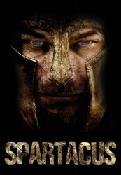

")
 
 IMDB-Wertung: 7.7 / 10
IMDB-Wertung: 7.7 / 10  Metascore:
Metascore: 
Spartacus ist ein stolzer Thraker und kämpft an der Seite der Römer gegen die Daker. Als er sich jedoch einem Befehl des Feldherren Gaius Claudius Glaber widersetzt, nimmt dieser ihn gefangen – Spartacus soll in der Galdiatorenarena sein Leben verlieren. Wider Erwarten überlebt der Hühne den Kampf auf Leben und Tod und wird an das Ausbildungslager von Batiatus verkauft. Hier muss er sich ständig gegen neue Gegner bewähren, doch er hat auch Verbündete. Anfangs hält ihn nur ein Gedanke am Leben: Seine ebenfalls als Sklavin verkaufte Frau Sura wieder zu sehen.
Jahr: 2005
Dauer: 55 Minuten
FSK: 18
Land: Italien Studio: Mondo TVTonspuren: DD5.1 - ,
Untertitel: Deutsch,
Auflösung: 1080p (1920x1080) Größe: 3368 MB
Genre: Animation/Trick, TV-Serie
Regisseur: Orlando Corradi
Drehbuch: Luciano Scaffa
Soundtrack:
Darsteller:
Datei: X:\FSK18-Serien\Spartacus\Spartacus S01 - Blood and Sand\S01E01 Die rote Schlange.mkv seit 19.11.2015
Festplatte: FSK18
 Es gibt insgesamt 17 Filme in der Gruppe 'FSK18-Serien'
Es gibt insgesamt 17 Filme in der Gruppe 'FSK18-Serien'